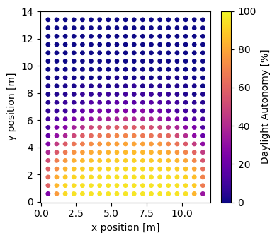

How to simulate spatial daylight autonomy using three-phase method?
This guide will show you how to calculate spatial daylight autonomy (sDA) using the Three-Phase method in Radiance. This guide shows how to automatically generate a Radiance model and three-phase method workflow from a EnergyPlus model. See How to setup a workflow configuration? and How to calculate workplane illuminance and eDGPs using three-phase method? for more information on how to setup a workflow configuration and calculate workplane illuminance without an EnergyPlus model.
What is spatial daylight autonomy?
Spatial daylight autonomy (sDA) is the percentage of the area that meets a minimum illuminance threshold for a specified fraction of the annual occupied hours. The target illuminance threshold is usually 300 lux for 50% of the occupied period.
Workflow
-
Import the required classes and functions
-
Setup an EnergyPlus Model
- Initialize an EnergyPlus model
- Create glazing systems (Complex Fenestration States)
- Add the glazing system to the EnergyPlus model
-
Setup EnergyPlus Simulation
- Initialize EnergyPlus Simulation Setup
- Calculate workplane illuminance
- Run the simulation
-
Calculate sDA
-
Visualize sDA (optional)
0. Import the required classes and functions
import datetime
import numpy as np
import frads as fr
from pyenergyplus.dataset import weather_files
1. Setup an EnergyPlus Model
1.1 Initialize an EnergyPlus model
Initialize an EnergyPlus model by calling load_energyplus_model and passing in an EnergyPlus model in an idf or epjson file format.
1.2 Create glazing systems (Complex Fenestration States)
Create a glazing system using create_glazing_system() with layer inputs and gaps. Each LayerInput object specifies a glazing or shading (fabric or venetian blinds) material. Gaps between layers are defined with Gap objects containing gas composition and thickness.
gs_ec01 = fr.create_glazing_system(
name="ec01",
layer_inputs=[
fr.LayerInput("igsdb_product_7405.json"),
fr.LayerInput("CLEAR_3.DAT"),
],
gaps=[
fr.Gap(
gas=[fr.Gas("air", 0.1), fr.Gas("argon", 0.9)],
thickness_m=0.0127
)
],
)
2. Setup EnergyPlus Simulation
2.1 Initialize EnergyPlus Simulation Setup
Initialize EnergyPlus simulation setup by calling EnergyPlusSetup and passing in an EnergyPlus model and an optional weather file.
To enable Radiance for daylighting simulation, set enable_radiance to True. The default value of enable_radiance is False. This step will setup the three-phase method in Radiance.
2.2 Calculate workplane illuminance
Use the calculate_wpi() method inside a callback function to calculate the workplane illuminance at each timestamp. Save the workplane illuminance to a variable.
Note
The calculate_wpi() method calls the ThreePhaseMethod class in the background. See How to calculate workplane illuminance and eDGPs using three-phase method? for more information on how to use the ThreePhaseMethod class directly.
def callback_func(state):
# check if the api is fully ready
if not eps.api.exchange.api_data_fully_ready(state):
return
# get the current time
datetime = eps.get_datetime()
# only calculate workplane illuminance during daylight hours
if datetime.hour >= 8 and datetime.hour < 18:
wpi = eps.calculate_wpi(
zone="Perimeter_bot_ZN_1",
cfs_name={
"Perimeter_bot_ZN_1_Wall_South_Window": "ec01",
}, # {window: glazing system}
) # an array of illuminance for all sensors in the zone
wpi_list.append(wpi)
2.3 Run the simulation
Set the callback function to set_callback and run the simulation. Refer to Application Guide for EMS for descriptions of the calling points.
eps.set_callback("callback_begin_system_timestep_before_predictor", callback)
3. Calculate sDA
Each element in wpi_list is a numpy array of sensors' workplane illuminance at each timestamp. Concatenate the numpy arrays in the wpi_list to a single numpy array. Then calculate the percentage of time when the workplane illuminance is greater than 300 lux.
wpi_all = np.concatenate(wpi_list, axis=1)
lx300 = np.sum(wpi_all >= 300, axis=1) / wpi_all.shape[1] * 100
xy = np.array(
eps.rconfigs["Perimeter_bot_ZN_1"]
.model.sensors["Perimeter_bot_ZN_1_Floor"]
.data
)[:, :2]
sda = np.concatenate([xy, lx300.reshape(-1, 1)], axis=1)
4. Visualize sDA (optional)
fig, ax = plt.subplots(figsize=(4, 3.5))
x, y, color = sda[:, 0], sda[:, 1], sda[:, 2]
plot = ax.scatter(
x,
y,
c=color,
cmap="plasma",
s=15,
vmin=0,
vmax=100,
rasterized=True,
)
ax.set(
xlabel = "x position [m]",
ylabel = "y position [m]",
)
fig.colorbar(plot, ax=ax, label="Daylight Autonomy [%]")
fig.tight_layout()
